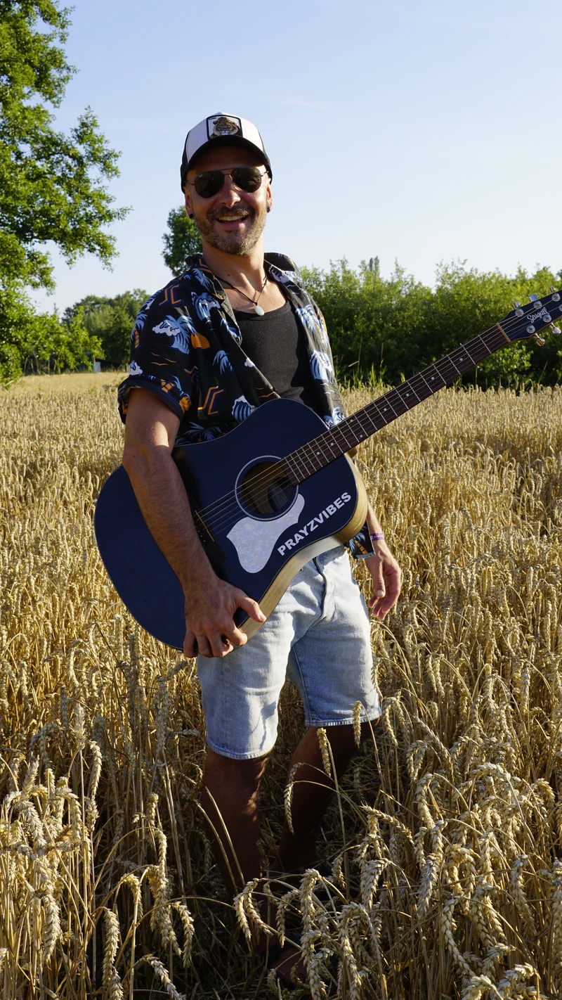
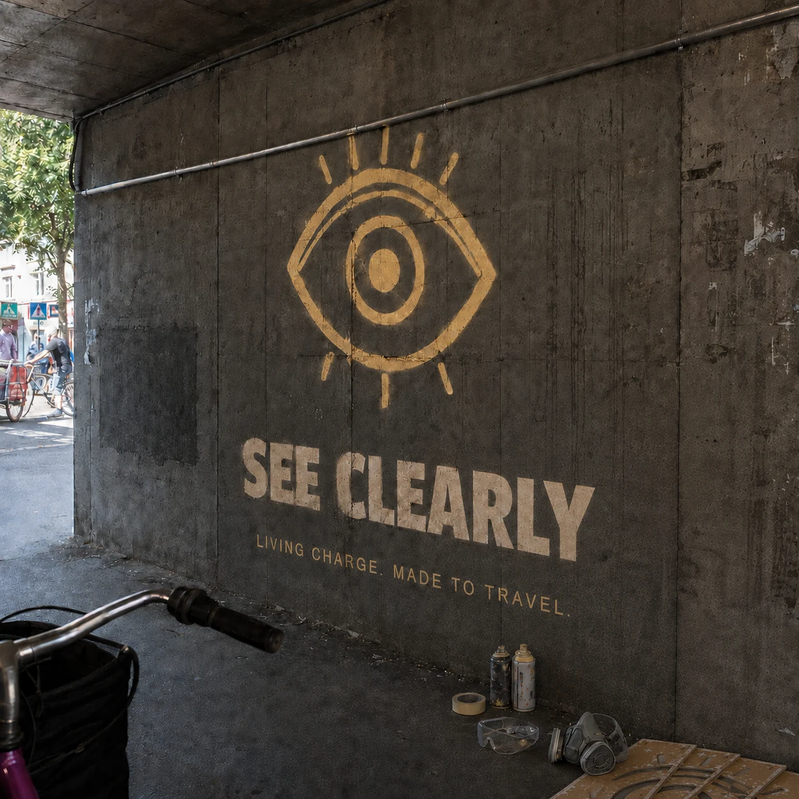
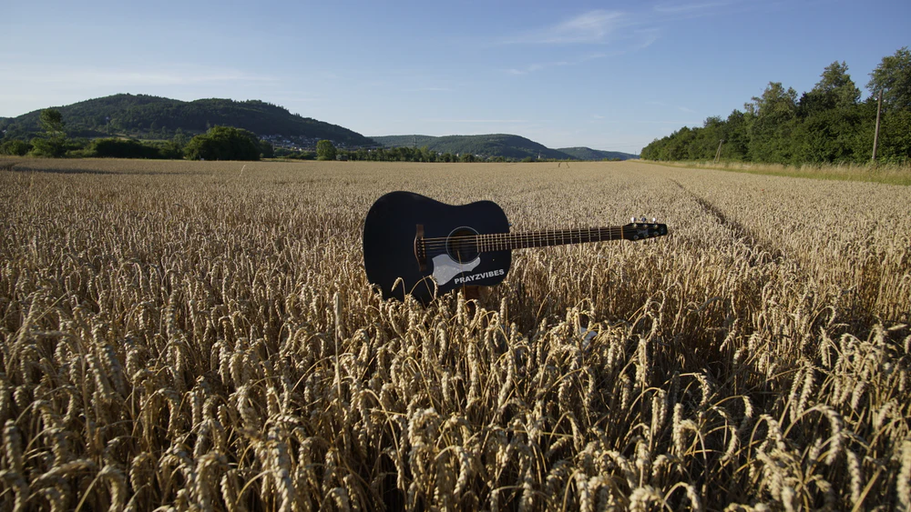

PRAYZVIBES
One voice. One black guitar. Rhythm underfoot.
At home along the way.
Street-born indie folk from Bavaria—sung in English, French and German.


A place to arrive
Come in your own way.
For a long time, home wasn’t a fixed place. It was the hope and trust that meaning would emerge through experience. Today my atelier is my safe space. From here, the songs head out again.
Alps and dunes. Lakes and fjords. A song on the street. Different places, the same curiosity about life.

Current release · four songs
TRANSIENCE
Four songs written between open air, memory, a leap forward and the moment of letting go.
01Mountain DayPerspective+

02High WeekMemory+

03Big JumpCourage+

04TranscendanceRelease+


YouTube loads when you press Play or allow external media in your cookie settings.
Start here · Mountain Day
The next step does not always come from pushing harder.
For the moment when you do not need more pressure, but a little air and another point of view. Mountain Day began there.
Berlin · Wed 4 Nov 2026 · 20:00
Berlin, can you hear me?
Ten minutes. Two original songs. One black guitar.
PRAYZVIBES joins Arno Zillmer’s Open Mic as one of the evening’s guest artists at WABE’s new venue on Schönfließer Straße 7 in Berlin-Pankow.
Come by. Bring someone with you.
Access: 3rd floor, no lift · not wheelchair accessible
EUR 5 at the door · no advance sales · reservation recommended
Bavarian hills · basement · street · rafters
I don’t sing to escape life. I sing to enter it.
At a picnic on a hillside, Redemption Song came on—and for a moment there was a deep peace that stayed with me. The first songs came later in a basement, with only voice and guitar. They learned to breathe in the street. Today I record them in a studio beneath the rafters.
Across countries and changing homes, I kept trusting that meaning would emerge through experience. Today my atelier is my safe space. And the door to the outside stays open.
Self-taught, independent and rooted in Franconian Switzerland. The songs move through English, French and German; voice, black acoustic guitar and rhythm stay at the centre.
LIVE CONSCIOUSLY Meet PRAYZ
Living Charge · one idea, four signs
Even a quiet sign
can get through.
Living Charge is my metaphor for the energy that keeps us alive. Four signs remind me how I want to make room for it. Open one and see where it takes you.

LEBENDE LADUNGManuscript · working draft
 SEE CLEARLYAnother perspective+
SEE CLEARLYAnother perspective+
My perspective can matter without being complete. Another perspective can correct mine without automatically being right.
From the LEBENDE LADUNG manuscript · working draft · translated from German
LISTEN DEEPLYA song can open a door+
The music stayed. At first I mostly heard sound; later I paid more attention to words. Even today, a song can open me up before I can explain why.
From the LEBENDE LADUNG manuscript · working draft · translated from German
 CREATE RESONANCEWhat happens between us+
CREATE RESONANCEWhat happens between us+

Resonance without claiming others means taking impact seriously, sharing interpretations, allowing disagreement, and not making another person proof of your own significance.
From the LEBENDE LADUNG manuscript · working draft · translated from German
LIVE CONSCIOUSLYMove forward with attention+

Notice. Put things in context. Respond. Look again.
From the LEBENDE LADUNG manuscript · working draft · translated from German
The street fades. The songs continue.
Ask about a live setListen to Transience Bring a date, a place and the kind of room. The rest starts here.Salzburg · live in the street
Bring the songs into the room.
These songs learned to live on the street, where nobody had to listen. If somebody stayed, it was real.
Living Charge · official collection
Four signs made to travel.
Hand-drawn reminders to see clearly, listen deeply, create resonance and live consciously—on pieces made to stay and move with you.
See the collectionOfficial PRAYZVIBES shop · Secure checkout via Fourthwall · Prices in EUR · Shipping and return details in the shop


Independent music · directly supported
Keep the songs independent.
Listening, sharing or coming to a show already helps. If you would like to support the next song directly, every option is gathered here—voluntary, simple and without pressure.
Listen · share · show up · contribute
Listening and sharing matter just as much
Press · venues · collaborators
Press & booking.
Biography, release information, live format, selected press and direct contacts.